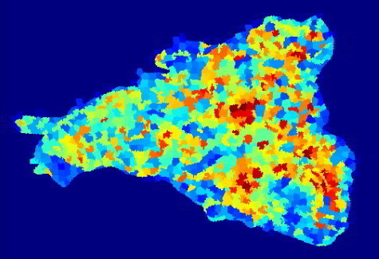

This demonstration will walk through the steps to segment image data derived from Landsat satellite imagery using python's scikit-image library. The example data is predicted biomass for a research forest in western Oregon. The goal is to create a zone map of areas of similar biomass levels for calculating summary statistics on. The files used in this walk through can be downloaded from the resources section.
The following is a zip file that contains a .tif file of predicted biomass for a research forest in western Oregon and a python script that will segment it.
Demo materialsNote that results seem to differ between Linux and Windows builds. You may need to adjust parameter arguments depending on your system.
Info on region adjacency graphs
Info on hierarchical merging of cluster nodes based on a region adjacency graph
import numpy as np from skimage import segmentation, color, io from skimage.future import graph from skimage.segmentation import mark_boundaries from matplotlib import pyplot as plt from osgeo import gdal import os
Callback to handle merging nodes by recomputing mean color
def weight_mean_color(graph, src, dst, n):
diff = graph.node[dst]['mean color'] - graph.node[n]['mean color']
diff = np.linalg.norm(diff)
return {'weight': diff}
Callback called before merging two nodes of a mean color distance graph
def merge_mean_color(graph, src, dst):
graph.node[dst]['total color'] += graph.node[src]['total color']
graph.node[dst]['pixel count'] += graph.node[src]['pixel count']
graph.node[dst]['mean color'] = (graph.node[dst]['total color'] /
graph.node[dst]['pixel count'])
Function to stretch and compress image to 8-bit range 0-255 for viewing
def make_display_image(img, bgPixels):
img = img.astype(np.float)
img[bgPixels] = np.nan
imgMean = np.nanmean(img)
imgStd = np.nanstd(img)
imgMinOrig = np.nanmin(img)
imgMinCalc = imgMean-(imgStd*2)
if imgMinCalc < imgMinOrig:
imgMin = imgMinOrig
else:
imgMin = imgMinCalc
img[bgPixels] = imgMin
imgMax = imgMean+(imgStd*2)
img[img < imgMin] = imgMin
img[img > imgMax] = imgMax
img = np.round(((img-imgMin) / (imgMax-imgMin+0.0)) * 255).astype(np.uint8)
return img
Define the image file path on your system.
inFile = 'C:/mock/emapr_hja_biomass.tif'
Define the desired file path on your system for the output raster.
outFile = 'C:/mock/emapr_hja_biomass_segmented.tif'
Define what the background value of the image data is. In our case -9999 means NODATA or NA.
bgValue = -9999
Activate the GDAL plugin for skimage library so that it can read GeoTIFFs
io.use_plugin('gdal')
Read in the image
img = io.imread(fn)
Identify the NODATA pixels using the value defined above
bgPixels = np.where(img == bgValue)
Create the display image and plot it
displayImg = make_display_image(img, bgPixels) plt.imshow(displayImg, cmap='gray')
Here is the image displaying forest biomass where white is high and black is low.
This step compresses the image value range and moves the background pixel value closer to the minimum value of the data, but far enough away to define a distinct boundary between image data and background. We do this to improve the results of the initial spatial clustering of the image - we're trying to squeeze the data a little closer together so that there is greater aggregation of neighboring pixels. If you have long tails in your data or extreme outliers you may decide to log or power transform your data to achieve the desired initial clustering. This is a subjective process and will likely need to be iterated until satisfying results are obtained. In the first line we reset the background value, which is originally -9999 (as defined above) to -100, and in the second line we scale the image data values from 0 to 600. Again, these values are arbitrary based on our assessment of the k-mean clustering of the image that occurs in the next step.
img[bgPixels] = -100 img = np.round(((img-np.min(img)) / (np.max(img)-np.min(img)+0.0)) * 600)
Group regions of neighboring cells together using k-mean clustering. You'll need to try different combinations of values for parameters compactness and n_segments until the size and shape of clusters seems appropriate. Use the next set of lines to visualize the clusters.
imgKmeans = segmentation.slic(img, compactness=110, n_segments=4000)
Plot the original data and the clustered data. You want the clusters to be slightly smaller than patches you can identify with your eyes in the original data because in a following step similar clusters will be merged. Change the parameter arguments above and rerun these lines as needed until you're reasonably satisfied with the clustering result.
kMeansLabelsAve = color.label2rgb(imgKmeans, img, kind='avg')
fig, (ax0, ax1) = plt.subplots(1, 2 ,figsize=(20,10), dpi=72)
ax0.imshow(img, cmap='gray')
ax1.imshow(kMeansLabelsAve)
ax0.axis('off')
ax1.axis('off')
Here is the result of the initial k-means clustering. The average biomass value is calculated per node and displayed on a scale from blue to red, where blue is low and red is high.
Calulate a measure of difference between adjacent clusters so that in the next step similar clusters can be merged together.
rag = graph.rag_mean_color(img, imgKmeans, mode='distance')
In this final segmentation step we merge similar nodes together using a threshold of difference between nodes. Here, again, you'll need to play around with the threshold value (thresh) and assess the result until you are reasonably satisfied. The second command is executed to force all background pixels to the same segment label.
imgLabels = graph.merge_hierarchical(imgKmeans, rag, thresh=75, rag_copy=True,
in_place_merge=True,
merge_func=merge_mean_color,
weight_func=weight_mean_color)
imgLabels[bgPixels] = imgLabels[0,0]
Use these line to view and evalute the final segmentation. Change the threshold in the previous step if necessary and/or go back to the image scaling and initial segmentation by k-means steps to alter arguments to tweak the result.
plt.figure(1, figsize=(10,10), dpi=72) plt.imshow(mark_boundaries(displayImg, imgLabels))
Here is the resulting segmentation as segment boundaries overlain on the biomass display image - not too bad!
In this final step the labeled segmentation of the orginal raster will be written to file as a GeoTIFF using the GDAL API.
src = gdal.Open(inFile)
driver = gdal.GetDriverByName('GTiff')
labelMax = np.max(imgLabels)
if labelMax <= 255:
dataType = 1
elif labelMax <= 65535:
dataType = 2
elif labelMax <= 4294967295:
dataType = 4
outFile = os.path.splitext(outFile)[0]+'.tif'
outImg = driver.Create(outFile, src.RasterXSize, src.RasterYSize, 1, dataType)
outImg.SetGeoTransform(src.GetGeoTransform())
outImg.SetProjection(src.GetProjection())
outBand = outImg.GetRasterBand(1)
outBand.WriteArray(imgLabels)
outImg = None
Here is the labeled patch map which can be used to calculate zonal statistics for patches - colors were randomly assigned to patches.